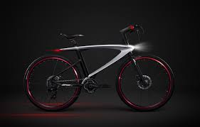

En países europeos como España, Dinamarca, Polonia, Holanda y Francia, y en algunos asiáticos como China, la bicicleta es un medio de transporte muy común entre sus habitantes. Y es que se cree que alrededor del mundo, 800 millones de bicicletas ruedan cada día, con ventajas no sólo para las personas sino para el cuidado del medio ambiente.
Y aunque en Colombia todavía somos temerosos para usar la bicicleta como medio de transporte, su capital, Bogotá, fue escogida recientemente por la fundación española Eroski Consumer como la octava mejor ciudad en el mundo para transportarse en estos vehículos de dos ruedas.
